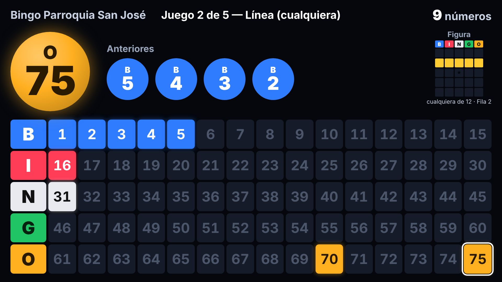
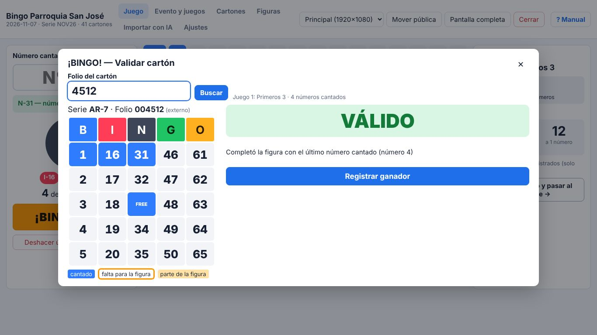
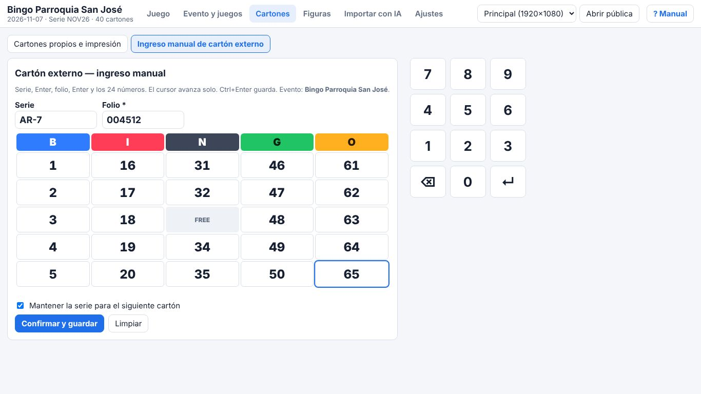
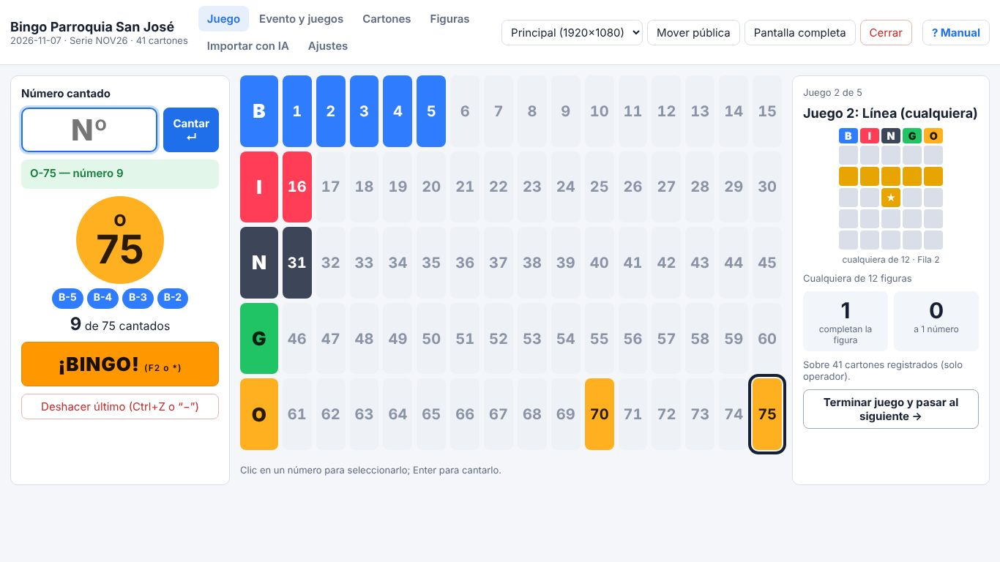
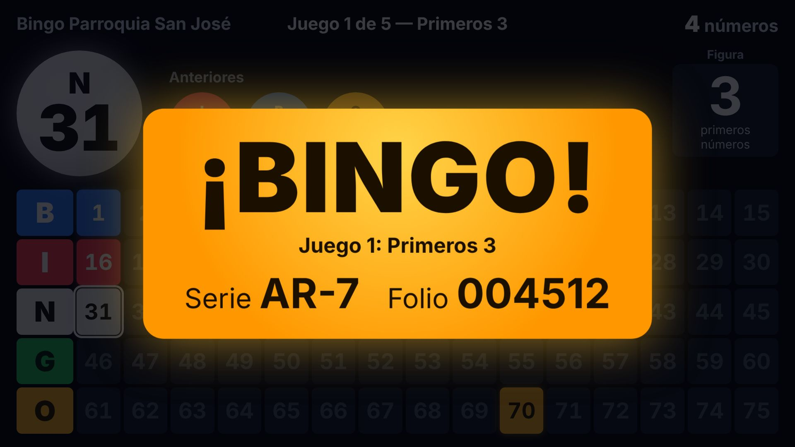

Dos ventanas, dos públicos
Panel completo para quien opera en el notebook y una pantalla limpia, grande y en alto contraste para el proyector. La app detecta el proyector y abre la pantalla pública ahí.
Para Windows 10 y 11
Digita los números que salen de la tómbola, muéstralos en grande en el proyector y valida cada "¡bingo!" con solo el folio del cartón, en segundos y sin discusiones.

La tómbola sigue siendo física y el bingo, presencial. Bingo Master se encarga de llevar la cuenta y validar a los ganadores.
Nombre, fecha y código de serie. Elige la secuencia de juegos: primeros 3, línea, X, cartón lleno o tus propias figuras.
Genera los cartones que necesites, todos distintos y con folio único. Expórtalos a PDF en tamaño carta o A4, de 1, 2 o 4 por hoja.
Digita cada número con el teclado numérico. El proyector muestra el último número en grande, los anteriores y el tablero completo.
Cuando alguien grita "¡bingo!", escribe el folio de su cartón. La aplicación dice VÁLIDO o NO VÁLIDO y anuncia al ganador en pantalla.
Como Bingo Master conoce el contenido de cada cartón registrado, no necesitas revisar el cartón físico ni confiar en lo marcado a lápiz. Escribe el folio y verás el cartón con los números cantados marcados y lo que le falta para la figura.

Panel completo para quien opera en el notebook y una pantalla limpia, grande y en alto contraste para el proyector. La app detecta el proyector y abre la pantalla pública ahí.
Teclado numérico y Enter. Avisa si un número ya salió o está fuera de rango. Deshacer siempre pide confirmación.
Biblioteca precargada (línea, columnas, diagonal, X, L, T, marco, cartón lleno, primeros N) y un editor para crear tus propias figuras.
Cartones aleatorios, sin disposiciones repetidas dentro del evento, con la serie y el folio bien visibles. Reimprime cualquier rango de folios.
El operador ve cuántos cartones ya completan la figura y cuántos están a un número. El público no lo ve.
Cada acción queda guardada al instante. Si el equipo se apaga, al volver a abrir la app sigues donde estabas. Respalda y restaura tus datos cuando quieras.

Si repartes cartones comerciales o de otra aplicación, regístralos para validarlos por folio igual que los propios:
La lectura con IA es la única función que usa internet y requiere tu propia API key de Anthropic. Antes de enviar la primera foto, la app te pide autorización.




Disponible próximamente en Microsoft Store para Windows 10 y 11.
Avísame cuando esté disponibleNo. Todo funciona sin conexión. Solo la lectura de cartones con IA, que es opcional, necesita internet.
Sí. Puedes generar e imprimir tus cartones desde la app, o registrar cartones de otro origen ingresándolos a mano o fotografiándolos con la lectura con IA. Todos se validan igual, por serie y folio.
Cada acción se guarda al instante. Al abrir la aplicación de nuevo, el evento sigue exactamente donde quedó.
Sí. Además de las figuras precargadas, puedes dibujar figuras fijas, combinar varias ("cualquiera de") o usar "primeros N números". Quedan guardadas para otros eventos.
No. Es una herramienta para conducir bingos presenciales: no maneja dinero, premios ni apuestas en línea.
Ninguno hacia nosotros: no hay cuentas, publicidad ni analítica, y los datos quedan en tu equipo. Revisa la política de privacidad.